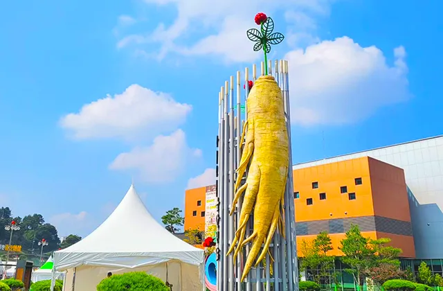
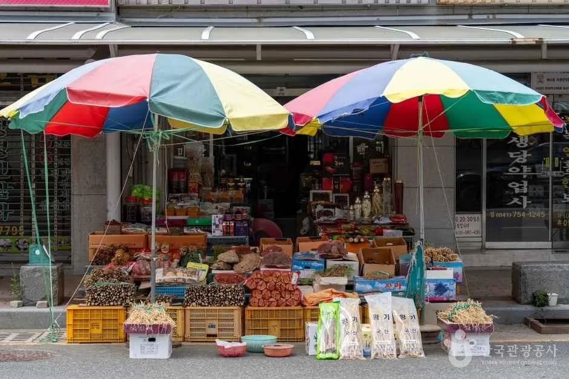
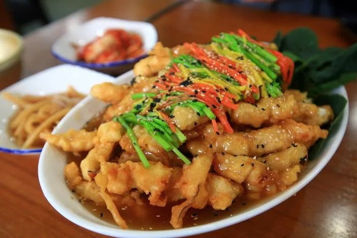
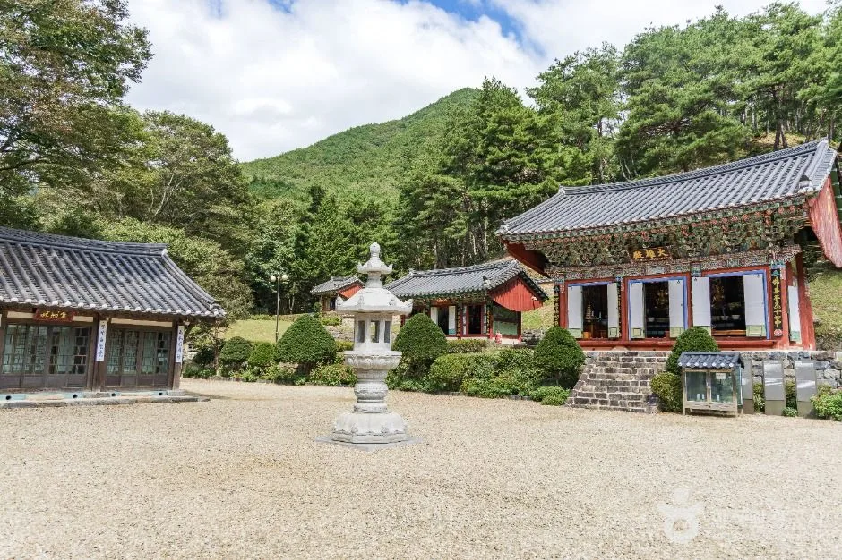
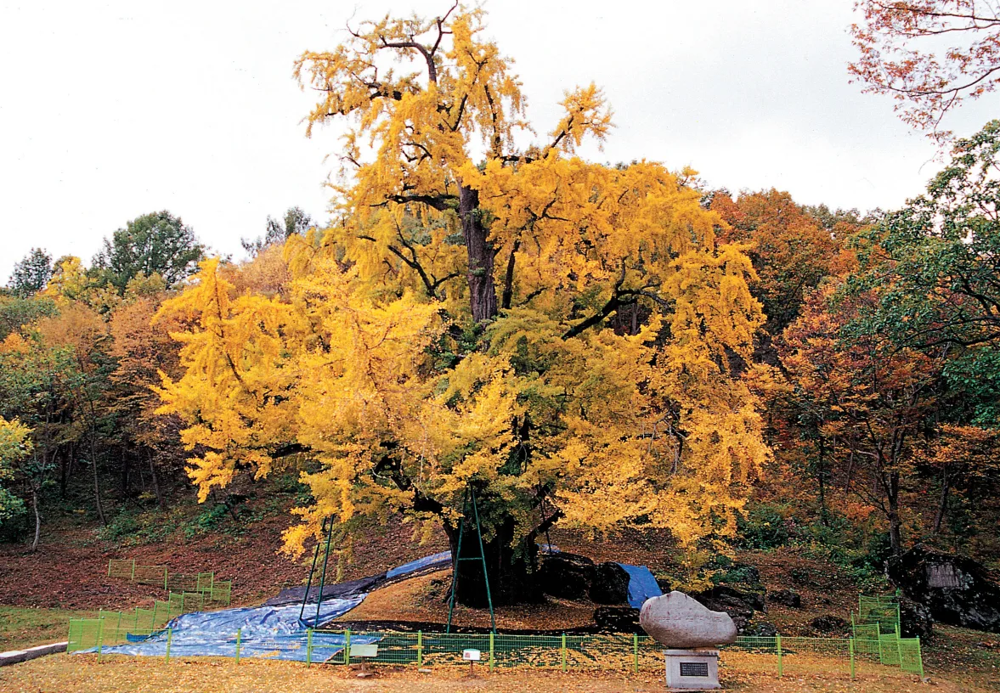
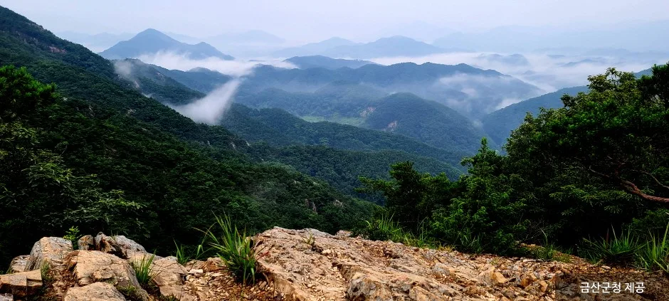
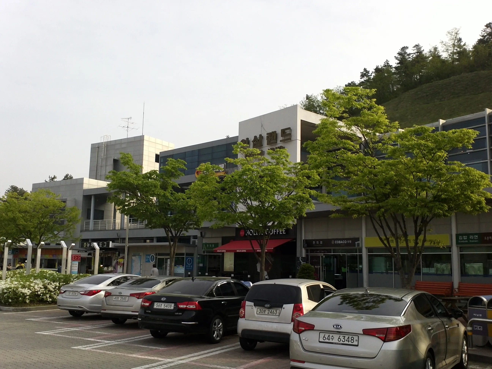
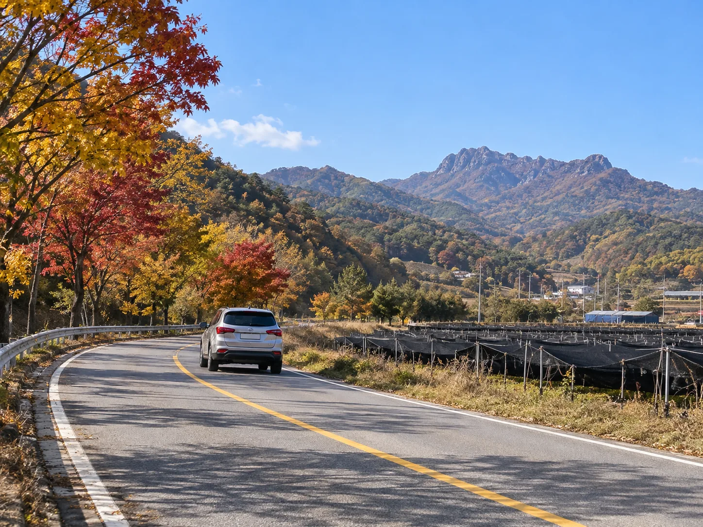

▲ 금산인삼광장에 세워진 대형 인삼 조형물. 축제 기간 동안 이 일대가 행사장의 중심이 된다 사진=한국관광공사
1. 2026 금산세계인삼축제, 언제 어디서 열리나
2026 금산세계인삼축제는 10월 2일(금)부터 11일(일)까지 열흘간, 충남 금산군 금산읍 인삼광장로 30 일원(금산인삼광장·금산인삼약초시장 일대)에서 열린다. 입장료는 무료이며, 대표 체험인 인삼 캐기 체험도 무료로 참여할 수 있다. 다만 캔 인삼을 구매하거나 인삼 목욕용품 만들기·압화액자 만들기 등 일부 프로그램에는 별도 비용이 든다. 축제 슬로건은 '언제나 청춘!'. 주차는 인근 공영주차장을 무료로 이용할 수 있다. 자세한 프로그램과 주차 안내는 금산세계인삼축제 공식 홈페이지에서 확인 가능하다.

▲ 금산인삼약령시장의 노점. 축제장과 걸어서 이어지는 인삼약초시장 일대도 함께 붐빈다 사진=한국관광공사
금산이 '인삼의 고장'으로 불리는 데는 유래가 있다. 전설에 따르면 오래전 진악산 아래 살던 강처사가 병든 어머니를 위해 진악산 관음굴에서 백일기도를 올렸고, 산신이 나타나 관음봉 아래에서 빨간 열매가 달린 풀뿌리를 찾아 달여 드리라고 일러줬다고 한다. 강처사가 그 뿌리로 어머니 병을 낫게 한 뒤 이를 널리 심어 나눠준 곳이 진악산 자락의 '개삼터'로, 오늘날 국내 최초의 인삼 재배지로 꼽힌다. 풍기·강화 등 다른 인삼 산지가 주로 재배 규모나 토양으로 이름을 알린 것과 달리, 금산은 이 개삼터 전설 덕에 '인삼의 시배지(始培地)'라는 상징성을 갖고 있으며, 세계인삼축제도 매년 이 자락에서 열린다.
2. 축제 프로그램 한눈에 보기
10일간 진행되는 프로그램은 크게 메인·부대·참여 프로그램으로 나뉜다. 표로 정리하면 이렇다.
| 구분 | 프로그램 | 비고 |
|---|---|---|
| 메인 프로그램 | 인삼 캐기 체험, 홍삼 족욕 | 체험 자체는 무료, 캔 인삼 구매 시 별도 비용 |
| 부대 프로그램 | 인삼 경선 대회, 야간 드론 라이팅 쇼 | 야간 프로그램은 일몰 후 진행 |
| 참여 프로그램 | 금산인삼 아트체험, 민속촌, 가족 전통 놀이 | 가족 단위 방문객 대상 |
| 먹거리 | 인삼 칼국수, 인삼튀김, 인삼라떼 | 인삼·약초 활용 특화 음식 |

▲ 금산의 대표 별미 중 하나인 인삼튀김. 축제장 인근 식당가에서 맛볼 수 있다 사진=한국관광공사
3. 축제장에서 차로 10분 — 천년 고찰 보석사와 은행나무
보석사(寶石寺)는 통일신라 헌강왕 12년(886년) 조구대사가 창건한 사찰로, 진악산 남동쪽 기슭에 자리한다. 절 앞산 중턱 암석에서 금을 캐내 불상을 주조했다는 데서 '보석사'라는 이름이 붙었다고 전해진다. 임진왜란 때 소실됐다가 조선 후기에 중건됐다. 금산인삼광장에서 국도 13호선과 보석사로를 거쳐 차로 약 10분이면 닿는다.

▲ 보석사 대웅전. 진악산 자락에 자리한 통일신라 시대 창건 사찰이다 사진=한국관광공사
보석사 입구 전나무숲을 지나면 경내에 천연기념물 제365호로 지정된 은행나무가 서 있다. 수령 약 1,100년, 높이 34m, 둘레 10.72m에 달하는 거목으로, 10월 중하순 노랗게 물드는 시기가 방문 절정이다. 축제 기간과 은행나무 단풍 시기가 겹칠 때가 많아, 인삼 캐기 체험 후 들르는 코스로 자주 추천된다.

▲ 보석사 은행나무. 천연기념물 제365호, 수령 약 1,100년으로 추정된다 사진=Wikimedia Commons (국가유산청, KOGL)
이 은행나무에는 나라에 큰일이 생길 때마다 울음소리를 냈다는 이야기도 전해진다. 1945년 광복과 1950년 6·25전쟁, 1992년 극심한 가뭄 때 나무가 소리를 냈다는 이야기가 마을에 구전되며, 조구대사가 보석사를 창건할 무렵 제자와 함께 심었다는 이야기와 함께 지금도 보석사를 지키는 신목(神木)으로 여겨진다.
4. 진악산 능선, 그리고 걸어서 닿는 인삼약령시장
진악산은 해발 약 732m(자료에 따라 737m로도 표기)로, 충남에서 서대산(904m)·계룡산(845m)에 이어 세 번째로 높은 산이다. 보석사 주차장에서 시작해 영천암삼거리·도구통바위를 지나 정상에 오르는 코스가 대표적이며, 관음봉 일대의 암봉과 원효암 인근 폭포가 볼거리로 꼽힌다. 등산까지는 부담스럽다면, 보석사 주차장에서 능선을 배경으로 한 전망만 잠깐 보고 내려와도 좋다.

▲ 운해가 걸린 진악산 능선. 충남에서 세 번째로 높은 산으로 꼽힌다 사진=금산군청 제공
축제장인 금산인삼광장에서 금산인삼약령시장까지는 걸어서 이동할 수 있다. 전국 인삼 유통량의 상당 부분이 거래되는 시장으로, 재래시장과 금산인삼국제시장, 금산수삼센터 등이 모여 있다. 매달 2·7·12·17·22·27일에는 오일장(금산금빛시장장날)도 함께 열려, 축제 날짜와 겹치면 시장 구경거리가 배로 늘어난다. 다만 매월 10·20·30일은 정기 휴무이니 방문 전 확인이 필요하다.
5. 차로 가는 길 — 접근로와 휴게소
수도권에서는 통영대전고속도로(舊 대전통영고속도로) 금산IC를 이용하는 것이 가장 빠르다. 금산IC에서 인삼광장까지는 지방도를 따라 10분 남짓이면 닿는다. 고속도로 상에는 '인삼랜드'라는 이름이 붙은 휴게소가 있어, 장거리 운전 중 쉬어가기에도 좋다. 대전·전주 등 인근 도시에서는 국도 13호선을 이용해도 접근할 수 있다.

▲ 통영대전고속도로의 인삼랜드 휴게소. 금산이 가까워졌다는 신호이기도 하다 사진=Wikimedia Commons (Asfreeas, CC BY-SA 3.0)
📍 축제 기간 혼잡 대비
축제 기간 주말에는 인삼광장 인근 도로와 공영주차장이 붐빌 수 있다. 오전 이른 시간에 도착하거나, 인삼약령시장 쪽 외곽 주차 구역을 먼저 확인하는 편이 낫다. 축제 문의는 금산축제관광재단(041-750-2316)으로 하면 된다.
6. 하루 코스로 정리하면
오전에 축제장에서 인삼 캐기 체험과 홍삼 족욕으로 시작해, 걸어서 인삼약령시장을 둘러보고 점심으로 인삼튀김이나 인삼칼국수를 먹는다. 오후에는 차로 10분 거리인 보석사로 이동해 천연기념물 은행나무와 대웅전을 보고, 시간이 남으면 진악산 자락 전망까지 잠깐 다녀오는 식이다. 축제와 단풍, 사찰 나들이를 한 번에 묶을 수 있는 코스인 셈이다.

▲ 실제 촬영 사진이 아닌, 금산 인삼밭 옆 가을 드라이브 길을 형상화한 AI 생성 예시 이미지다 이미지=AI 생성
✅ 출발 전 확인할 것
· 축제 기간(10/2~10/11) 및 정확한 프로그램 일정은 공식 홈페이지에서 최종 확인
· 인삼 캐기 체험은 무료, 캔 인삼 구매·일부 제작 체험은 현장 비용 준비
· 보석사·진악산 방문 시 편한 신발 권장
· 인삼약령시장은 매월 10·20·30일 정기 휴무